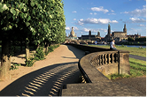
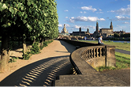
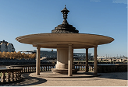
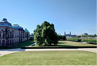

PAVILLION
The space feels airy and ordered, with clear lines and soft light. Atmospheric view on Dresden's Skyline.
Matchmaker
Japanese Palace Gardens
are located in the Neustadt district of Dresden, directly along the river Elbe, and are part of the historic Japanese Palace complex.
VISUAL VIBE

COLOUR THEME
The place is defined by dominant colors with soft greens, pale stone, and muted beige, creating a peaceful and balanced setting.

secret spots
PAVILLION
The space feels airy and ordered, with clear lines and soft light. Atmospheric view on Dresden's Skyline.
QUIET PARK
The park offers changing views between nature and architecture, creating a balanced and relaxed atmosphere. It is well suited for unhurried movement and quiet conversation.
INNER PATIO
Surrounded by historic walls, it feels quieter and more intimate than the surrounding park. The courtyard offers a sense of calm separation from the city while remaining centrally located.

Conversation starters

AUDITIVE RECOMMENDATIONS
Inspires slow walks, open green spaces, and quiet conversation. Soft melodies and warm tones accompany the atmosphere without drawing attention away from the moment.
Find another
lovely date location